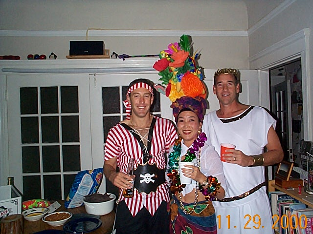

Diane, our lovely hostess, had some difficulties throughout the night with her fruit hat (which she made herself!). Frequent readjustments had to be made to keep it straight (a reference to Young Frankenstein's hopping hunchback maybe?). |
||
|  | ||
Appearances may be deceiving: Shane and Dan absolutely deny agreeing on their respective costumes beforehand. Those of us expecting a staff fight were very disappointed, though. |
||
Don't be grossed out: the green goo is not... er... organic. |
||
Special Agent Michael G. posing with catwomen Delphine and Benedicte. |
||
Another cameo by Mr. Gnarly Staff, accompanied by Mami and Kathy (Snow White did have a basket with an apple in it, although we can't see it here.) |
||
Don't be fooled by the photo: Marcus' "70's Stud" outfit did not get him to score at all on that evening. People were very eager to pose with him, though. |
||
Ah! Told you she had a basket! |
||